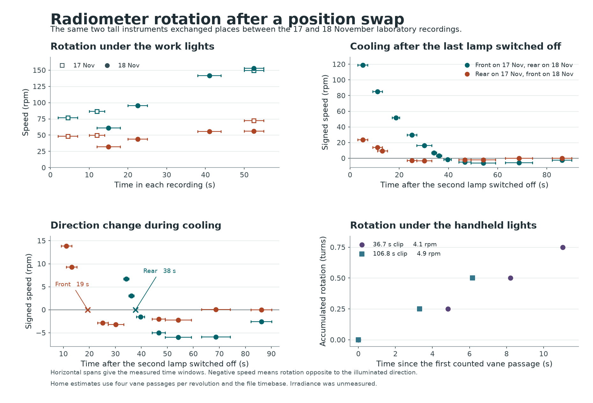

Fall 2026 · University of Massachusetts Amherst
Mechanical Engineering
Laboratory II
Syllabus, theory lectures, pre-labs, laboratory instructions, and analysis files for MIE 402.
Course syllabus
Current schedule, grading, laboratory sections, and course policies
Lecture 01 · Orientation and report writing
Six experiments, report structure, and clear technical communication
Lecture 02 · Recording and analyzing sound
Sampling, aliasing, FFT, Moku:Go recording, MAT export, replay, and Lab 1 analysis
Lecture 03 · Single pendulum
Pendulum theory, finite-angle behavior, high-speed video, tracking, and analysis
Lecture 04 · Double pendulum
Coupled motion, energy, modes, nonlinear response, video tracking, and MATLAB analysis
Lecture 05 · Lab 4 free response
October 19: industrial ring-down applications, 1-DOF theory, damping from peaks, FFT, spring calibration, and Vernier workflow
Lecture 06 · Forced vibration
Impact response, driven spring-end motion, resonance and frequency-response measurement.
Lecture 07 · Radiometer
Thermal gas forces, illumination effects, video timing and rotational-speed analysis.
Laboratory report guide
Section purposes, page allocations, figures, analysis, and grading rubric
Pre-Lab 1 · Prepare to record sound
Waveforms, RMS, sampling-rate cases, FFT, harmonics, and replay
Lab 1 · Dynamic data sampling
Sound acquisition, frequency analysis, MATLAB replay code, and report assignment
Pre-Lab 2 · Single pendulum
Run supplied code, compare pendulum models, predict angle effects, and explain results
Lab 2 · Single pendulum
High-speed-camera workflow, tracking, MATLAB and saved-data recovery
Pre-Lab 3 · Double pendulum
Supplied simulation code, small-angle modes, predictions, and written analysis
Lab 3 · Double pendulum
Applications, four release cases, video tracking, full nonlinear model, and MATLAB analysis
Pre-Lab 4 · 1-DOF free response
Applications, calculations, predictions, supplied analytical/numerical code, decay fitting, and FFT interpretation. No programming assignment.
Lab 4 · 1-DOF free response
Four spring calibrations, seven cart cases, logarithmic decay, FFT, and combined Labs 4–5 report evidence
Pre-Lab 5 · Forced vibration
Run the simulation, explain impulse and steady response, and prepare the bench measurements. Submit one Word/PDF file.
Lab 5 · Forced vibration
Input calibration, three impulse records, harmonic sweep and theory comparison for the combined Labs 4–5 report.
Pre-Lab 6 · Radiometer
Guided reading, required molecular Monte Carlo, illumination effects and video-based rotation analysis.
Lab 6 · Radiometer
Video passage timing, thermal gas forces, illumination comparisons and the separate Lab 6 report.
Lab 6 videos and speed plots
A radiometer reverses direction
Both radiometers reverse after exchanging positions



Six experiments, four reports
| Lab | Experiment | What you will investigate | Report |
|---|---|---|---|
| 1 | Dynamic data sampling and frequency analysis | Sampling rate, record duration, aliasing, and spectra | Lab 1 |
| 2 | Single pendulum | Angle histories and the limits of a small-angle model | Labs 2 + 3 |
| 3 | Double pendulum | Coupled motion, initial conditions, and nonlinear behavior | Labs 2 + 3 |
| 4 | 1-DOF system: free response | Natural frequency and damping from decay | Labs 4 + 5 |
| 5 | 1-DOF system: forced response | Excitation frequency, amplitude, phase, and resonance | Labs 4 + 5 |
| 6 | Radiometer | Rotation from video and the effect of illumination and warming | Lab 6 |
Fall 2026 covers these six experiments. Detailed procedures and pre-lab assignments will be released through Canvas.
Report deadlines
Reports are due on Canvas at 11:59 PM. Dates are tentative. Check Canvas for changes.
| Submission | Tentative due date | Course weight |
|---|---|---|
| Lab 1 report | Monday, October 5 | 10% |
| Combined Labs 2 and 3 report | Monday, November 2 | 25% |
| Combined Labs 4 and 5 report | Monday, November 23 | 25% |
| Lab 6 report | Monday, December 7 | 15% |
Six equally weighted pre-labs contribute 20% of the course grade. Participation contributes 5%.
Weekly meetings
Theory: Monday, 12:20–1:10 PM
Hasbrouck Laboratory 134
Laboratory: your assigned Tuesday–Friday section
Gunness Laboratory 5
Office hours: Friday, 12:20–1:10 PM
Gunness Laboratory 1
Preparation
- Confirm your section and GTA in Canvas.
- Arrange access to MATLAB and Simulink.
- Read the released lab instructions and prepare the pre-lab.
- Save raw data and record measurement settings during every experiment.